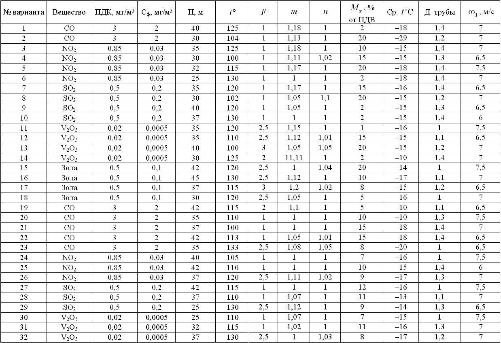

Что понимается под предельно-допустимой концентрацией?
Что такое временно допустимая концентрация?
На какие типы подразделяются предельно-допустимые концентрации?
Что называется эффектом суммации?
Какие нормативные требования существуют к качеству воды?
Что такое химическое потребление кислорода?
Что такое биологическое потребление кислорода?
Как определяются условия спуска сточных вод в водные объекты?
Как определяется необходимая степень очистки сточных вод?
Как осуществляется нормирование загрязняющих веществ в почве?
Рассчитать величину ПДВ для окислов азота при условии, что фоновые концентрации от внешних источников составляют 0,01 мг/м3. Выбросы производятся из трубы высотой 50 м предельно допустимая концентрация для окислов азота 0,04 мг/м3; расчеты проводятся для равнинной местности, не имеющей существенных перепадов высот; объем выбросов составляет 52 м3/с; температура выбросов составляет 358°С, температура окружающего воздуха 20°С, коэффициенты, определяющие условия выхода газовой смеси из источника, m = 2, n = 3.
Рассчитать величину ПДВ для углеводородов при условии, что фоновые концентрации от внешних источников составляют 0,01 мг/м3. Выбросы производятся из трубы высотой 50 м; предельно допустимая концентрация для углеводородов 1,5 мг/м3; расчеты проводятся для равнинной местности, не имеющей существенных перепадов высот; объем выбросов составляет 52 м3/с; коэффициенты, определяющие условия выхода газовой смеси из источника, n=3; диаметр устья источника 5 м.
Рассчитать среднесуточную предельно допустимую концентрацию окиси углерода, если коэффициент ее приведения равен 0,3 усл. т/т.
Какова величина нормы содержания примесей в воздухе территории предприятия по сравнению с ПДК рабочей зоны.
Рассчитать величину ПДВ в атмосферу по вариантам, представленным в табл. 2.7. Построить график изменения концентрации вещества в приземленном слое воздуха.
На реке имеется промышленное предприятие, сбрасывающее сточные воды в реку. На расстоянии L по реке от места сброса на пойме проектируется инфильтрационный водозабор для питьевого водоснабжения из аллювиальных песков. Будет ли загрязнение воды на реке на уровне инфильтрационного забора превышать ПДК по заданному компоненту? На какое расстояние нужно сместить водозабор, чтобы концентрация выбросов снизилась ниже ПДК? Данные для расчета по вариантам представлены в табл. 2.8.
Таблица 2.7
Исходные данные для расчета ПДВ в атмосферу к вопросу № 16

Таблица 2.8
Исходные данные для расчета ПДВ в атмосферу к вопросу № 17